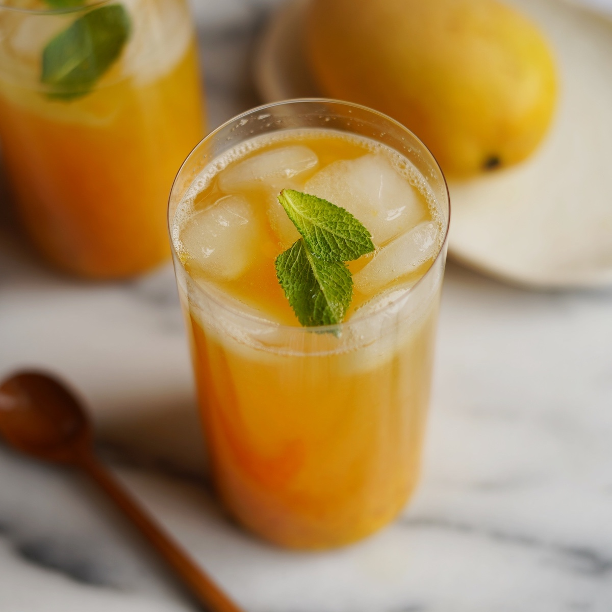

Mango Green Tea

Description
This recipe is for creating a refreshing mango green tea, similar to the ones you buy from bubble tea stores.
Easy to make, all that's needed is the ingredients, which are not specific as it's up to personal preference.
Ingredients
- Green Tea
- Ice
- Mango Puree
- Sugar/Syrup
Steps
- First have a cup of green tea boiled.
- Then add 1/4 cup of mango puree into the green tea. This can be based off preference of mango flavor.
- Make sure to stir the mango puree in the boiled green tea.
- When the mango puree has mixed with the green tea, add sugar/syrup to adjust the sweetness, about 1 tablespoon.
- Add ice and stir until the drink is cooled.